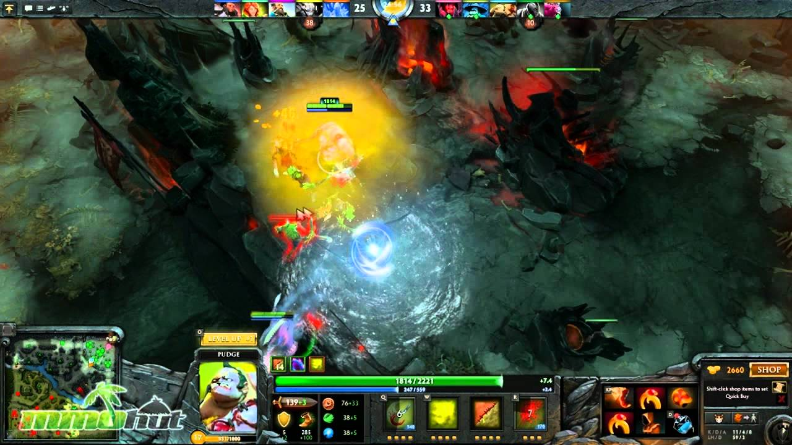

O meu principal hobbie é música. Sempre gostei de tocar instrmuentos (pois fui obrigado a aprender quando eu era criança e acabei gostando). Hoje em dia, gosto muito de tocar guitarra (principalmente heavy e power metal) e violão (clássico). Tenho muita vontade de comprar um teclado, porém meu lado racional não me deixa gastar dinheiro com isso.
Alémd isso, sou um grande fã de videojogos. Gosto muito de Dota 2 (é meu favorito). Porém, como ninguém mais do Brasil joga isso, acabei indo para o League of Legends. Além disso, gosto bastante de RPGs como Dark Souls e Skyrim. Minha série favorita são os já citados soulsborne da FromSoftware (Dark Souls, Demon Souls, Sekiro e Bloodborne).
Sou bastante fã de livros de filosofia, debates etc. Gosto principalmente da linha de pensamento alemã (Nietzsche e Schopenhauer, principalmente) e das ideias conservadores de Burke. Tenho vários livros disso e acho que ler essas coisas me deixa mais calmo. Além disso, creio que ciências humanas são muito mais importantes que exatas, porém tenho facilidade apenas com exatas, por isso estou em computação.